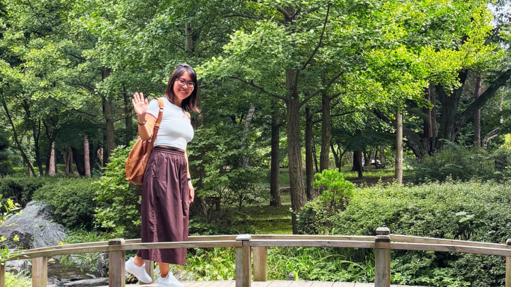

Mais de dezessete anos em tecnologia: dez em que eu ainda não sabia me acolher, e sete em que aprendi a caminhar em direção a mim.
Por muito tempo vivi no piloto automático — em todas as áreas da minha vida. Entregava tudo, cumpria todos os prazos e expectativas de terceiros — e não sentia quase nada. Acreditava que isso fazia parte da vida adulta.
Houve um momento em que percebi o quanto eu me sentia uma estranha na minha própria vida. Acordei um dia e não reconhecia quase nada como escolha minha, e foi um grande choque. Além da psicoterapia, comecei a usar as terapias integrativas para lidar com as emoções que estavam desequilibradas, como parte do processo. Em algum momento, passei de cliente a também praticante, aplicando o Alinhamento Energético em mim mesma e em outras pessoas.
O Alinhamento Energético foi o que me mostrou a diferença entre atravessar os dias e estar viva neles. Não porque o ruído parou — ele ainda está aí. Mas porque consigo me ouvir de novo dentro dele.
Somos seres integrados. O equilíbrio em um campo se estende a todos os outros.
Hoje conduzo sessões para pessoas que estão exatamente onde eu estive: a cabeça cheia, a agenda cheia e nenhum espaço para se ouvir. O trabalho é simples e não pede nada de você — só permissão.

O caminho de volta nunca foi barulhento.
Foi o ano em que comecei a admitir para mim mesma que não estava feliz com a vida que havia construído até então.
Eu já não me reconhecia em quase nenhuma área da minha vida, e uma crise de esgotamento me fez finalmente começar a prestar mais atenção em mim.
Foi o início de um despertar.
Depois de passar muito tempo tentando “me consertar” sozinha e perceber que não estava conseguindo, resolvi aceitar ajuda profissional.
Aprendi não apenas a importância de contar com apoio, mas também algo que até então era muito difícil para mim: pedir e receber ajuda.
O processo de psicoterapia estava me colocando diante da minha própria história — e de emoções que, naquele momento, pareciam transbordar.
Minha psicoterapeuta percebeu que eu precisava de um apoio extra para lidar com a ansiedade e me recomendou experimentar algumas Práticas Integrativas como cuidado complementar.
Foi assim que cheguei à Acupuntura e aos Florais de Bach.
Fiquei encantada.
Naquele momento, eu só buscava um pouco mais de apoio para atravessar o que estava vivendo. Não fazia ideia de que aquela recomendação abriria uma porta que, alguns anos depois, também mudaria o rumo da minha vida profissional.
Fiz uma transição de carreira dentro da tecnologia com a qual havia sonhado por anos.
Entrei na empresa dos sonhos, para fazer o trabalho dos sonhos. Achei que aquele seria o meu final feliz.
Não foi.
Conquistar aquilo que eu tanto queria não resolveu o que ainda precisava ser olhado dentro de mim. Pelo contrário: percebi que estava apenas começando um processo muito mais profundo de transformação e cura pessoal.
Foi quando busquei ainda mais apoio nas Práticas Integrativas — e comecei a me aproximar delas não apenas como cliente, mas também como aprendiz.
Fiz diferentes cursos, inicialmente para compreender e cuidar melhor de mim mesma.
Naquela época, eu ainda imaginava que continuaria em tecnologia por muitos anos. Talvez, dali a uns 20 anos, pensava, pudesse fazer uma nova transição e me tornar acupunturista.
Foi um ano de uma descoberta importante sobre mim: entendi que meu cérebro funcionava de uma forma diferente daquela que eu havia imaginado durante toda a vida.
Essa descoberta também mudou a forma como eu enxergava algumas das minhas características e percepções, e senti que era o momento certo para começar a desenvolver mais a minha intuição — uma escolha pessoal, como parte de aprender a confiar em mim mesma e na minha própria forma de perceber o mundo.
Foi quando me joguei ainda mais nas Práticas Integrativas.
Em outubro, descobri a Radiestesia — e me apaixonei.
Mergulhei de cabeça no aprendizado e na prática. Nos meses seguintes, dediquei mais de duas horas por dia a isso, praticando tanto comigo mesma quanto com outras pessoas, ainda durante o curso.
O que começou como mais uma ferramenta dentro da minha própria jornada rapidamente se tornou uma parte importante da minha vida.
Pela primeira vez, também comecei a perceber que aquilo que eu havia buscado para me ajudar podia se tornar uma forma de apoiar outra pessoa.
Bem no início do ano, eu já estava havia vários meses profundamente mergulhada na Radiestesia.
Então, em fevereiro, cheguei a um ponto que deixou muito claro que eu precisava voltar boa parte dessa atenção para mim mesma.
Durante a maior parte daquele ano, minha prática ficou mais silenciosa e pessoal. Continuei estudando e praticando Radiestesia e trabalhando com gráficos radiônicos, mas principalmente como parte do meu próprio autocuidado, praticando ocasionalmente com algumas outras pessoas.
E foi nesse período mais silencioso que comecei a entender algo que passaria a importar muito para mim.
Eu ainda estava em pleno processo de reconstrução interior. Definitivamente não me sentia alguém que tinha tudo resolvido.
E, mesmo assim, as experiências que eu já tinha vivido com outras pessoas me mostraram que eu não precisava estar com tudo resolvido dentro de mim para conseguir oferecer algo genuíno a alguém.
Poder apoiar outra pessoa enquanto eu mesma ainda aprendia a me reconstruir foi uma das descobertas mais bonitas daquele período.
Foi também em 2024 que tive meu primeiro contato com o Reiki. Não dei continuidade à prática naquele momento, e meu caminho seguiu principalmente pela Radiestesia e pelos gráficos radiônicos.
Ao mesmo tempo, aos poucos, algo também estava mudando na minha carreira. Depois de tudo que vinha se movendo dentro de mim desde 2019, eu estava começando a encontrar uma nova forma de estar em tecnologia.
Naquele ano, também fui promovida. Minha carreira estava avançando, mesmo enquanto eu ainda estava reconstruindo partes de mim.
O Reiki ficou ali, uma experiência que eu havia vivido sem saber que voltaria a fazer parte da minha história alguns anos depois.
Foi um ano de processar e integrar todas as mudanças até ali. De perceber o quanto a minha vida tinha mais a minha cara e o quanto eu havia aprendido a caminhar com os meus próprios pés.
Foi também o meu ano mais produtivo em tecnologia.
Eu me sentia bem, confiante e muito mais capaz de lidar com os desafios da minha rotina. Naquele momento, acreditava genuinamente que, mantendo meus chakras alinhados e o cuidado energético como parte da minha vida, conseguiria seguir tranquilamente por mais 20 anos na área.
Até ali, somando formação e prática ao longo dos anos anteriores, eu já tinha acumulado mais de 400 horas dedicadas às Práticas Integrativas e ao trabalho energético — sempre conciliando esse caminho com minha carreira regular em tecnologia.
Foi também um ano de profunda reconexão com a vontade de viver plenamente.
Eu não fazia ideia de que essa mesma sensação de estar inteira mudaria completamente os meus planos no ano seguinte.
Comecei o ano acreditando que seria o meu melhor ano em tecnologia.
Tudo parecia apontar para isso.
O ano anterior tinha sido o mais produtivo da minha carreira. Eu tinha crescido profissionalmente e finalmente tinha encontrado uma forma bem mais saudável de estar naquele mundo.
Mas, à medida que eu ficava mais feliz e mais em paz comigo mesma, comecei a perceber algo que eu não esperava:
Eu não estava mais feliz ali.
No início, foram sinais pequenos.
Um deles veio depois de uma sessão de Alinhamento Energético, quando alguém me contou que estava dormindo melhor desde o nosso atendimento.
Isso ficou comigo.
Pouco depois, recebi um retorno positivo sobre algumas telas em que eu tinha trabalhado — o tipo de retorno que, antes, teria me deixado genuinamente orgulhosa e realizada.
E aquilo ainda importava.
Mas já não me tocava do mesmo jeito.
Alguma coisa no meu sentido de propósito tinha mudado.
Pela primeira vez, comecei a me perguntar, a sério, se a carreira que eu tinha passado mais de 17 anos construindo ainda era onde eu queria viver o próximo capítulo da minha vida.
Resisti a essa percepção por um tempo.
A tecnologia tinha sido uma parte tão importante da minha vida. Eu tinha trabalhado duro para construir essa carreira, e ainda mais duro para encontrar uma forma mais saudável de estar nela. Considerar deixá-la para trás não era uma possibilidade fácil.
Mas, eventualmente, tive que admitir para mim mesma o que eu já sabia.
Eu não tinha fracassado em fazer aquela vida funcionar.
Eu tinha mudado.
E estar, finalmente, bem comigo mesma foi o que me permitiu ver que aquela vida, pela qual eu tinha trabalhado tanto, já não parecia mais minha.
Esse tipo de movimento já tinha acontecido em outras áreas da minha vida desde aquele despertar, lá em 2019.
Eu tinha aprendido a reconhecer o chamado da Vida.
E, uma vez que eu reconhecia, não tinha como não ouvir.
Então eu segui.
De novo.
Depois de mais de 17 anos em tecnologia, tive uma despedida maravilhosa da última empresa em que trabalhei e comecei a abrir meus atendimentos para o mundo.
Foi nesse novo capítulo que o Reiki voltou para a minha vida, de forma intuitiva.
Aos poucos, ele passou a ocupar, na minha prática, o espaço que antes era dos gráficos radiônicos.
A Radiestesia continuou sendo parte essencial do meu trabalho, especialmente para a leitura e o direcionamento de cada sessão, enquanto o Reiki se tornou minha principal ferramenta de harmonização energética.
Foi dessa integração — e de todos esses anos de estudo, prática e transformação pessoal — que nasceu a forma como conduzo hoje minhas sessões de Alinhamento Energético.
Recomendo para quem quer aprender a cuidar da própria energia e da energia das pessoas que ama.
Não sou afiliada a nenhum desses cursos. Compartilho aqui porque realmente gostei da proposta e do material, e tive excelentes resultados desde as primeiras práticas de cada técnica. E porque entendi, na prática, que cada pessoa que aprende a “mexer com essas coisas” pode ajudar muitas outras pessoas nos ambientes por onde passa.
Então, respondendo sobre se percebi alguma alteração no meu padrão emocional? Sim, foi o que mencionei acima. Consegui manter meu padrão de humor, apesar de muitas demandas e cansaço, rs
Mas queria te dar um feedback, tenho conseguido dormir. As vezes ainda rola uns casos isolados de insônia, tipo ontem, mas no geral tô dormindo muito bem.
Mas um pouco antes de você mandar o relatório eu senti uma calma num momento de estresse que eu até estranhei, depois que você mandou o relatório eu fiquei pensando
Os nomes são omitidos para preservar a privacidade das pessoas que escreveram estas mensagens. Experiências individuais, não garantias de resultado.